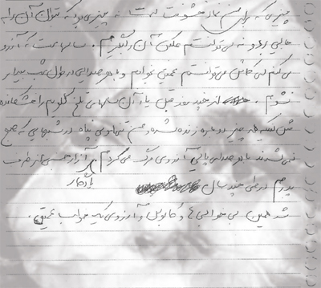

|
|
دیوها پشت پرده های شهر/ الناز انصاری
شنبه13 آذر 1389
یادم نیست از کی، ولی از وقتی یادم می آید یکی از سرگرمی هایم تماشا و فکر کردن به پشت پنجره هایی بود که آدم ها را از کوچه و شهر جدا می کرد و می برد توی چاردیواریِ اختیاری شان. خوشم می آمد توی خانه هر کسی را از شکل پرده خانه مجسم کنم. از جنس و شکل پرده ها، جنس و شکل آدم ها را حدس بزنم و از نور توی خانه ها حدس بزنم که صاحب خانه مهمان دارد، آدمی تنهاست، با یکی گرم عشقبازی است، دعوا کرده اند، بدهکارند، یا خواب هستند خواب چه می بینند. سرگرمی ساده و مزمنی بود که امروز برای همیشه از دست دادمش.
یک هفته است روایت های زنان را از خشونت توی خانه هایشان می خوانم . حالا پشت هر پنجره، پشت هر پرده گیپور یا مخمل، نخ یا حصیری سایه یک دیو کوچکی را می بینم که خودش را توی سوارخ سنبه های خانه ها قایم می کند. آدم ها از خانه ها می روند، خانه شان را عوض می کنند، یک خانه قدیمی را می کوبند و جایش 20 خانه جدید می سازند که بنگاه دار با آب و تاب به جای تبلیغ خانه کلنگی بگویند: نوساز، کف پارکت، حرارت مرکزی ... و هیچ کس حواسش به دیوها، به ساکنان همیشه خانه ها و به تکثیر آنها به تعداد تکثیر خانه ها نیست. دیوهای نوساز، دیوهای مدرن، دیوهای "ام دی اف"، دیوهای تحصیلکرده.

صدای زن 60 ساله را می شنوم که از مرد دائم الخمرش می گوید که او را لخت و عور، شب و روز، زمستان و تابستان در کوچه می گذاشت و حالا همه آدم ها، همه کوچه ها دیو ترسناک رویاهایش هستند. صدای مادربزرگم را می شنوم که تا دو روز از مردش بی خبر می ماند، خبر مردش را با نام زن جوان دیگری می شنید، صدای مادر مادرم را می شنوم که از توی گور روایت می کند چطور در 13 سالگی او را به عنوان مزد به نوکر خانه زادشان بخشیدند. صدای دختر 20 ساله را می شنوم که از صدای موتور می ترسد، موتور یادآور چاقو و چماق، صدای جوان و لرزان دختر دیگری را می شنوم که شب و خواب یادآور دست های هوسران پدرش است. صدای زن دیگری که غذا خوردن و سفره تن اش را می لرزاند که یاد مادرش می افتد که بارها ظرف داغ غذا بر تن اش هوار شده. و چه خوب که زنان روایت هایشان را پیش از امسال ثبت نکرده بودند، گر نه صداهایی که از گورها می آمد به گورمان می برد. و چه بد که شاید اگر ثبت شده بود این همه تصویر از این دیو خشونت، شاید تا به حال فکری به حال زاد و ولد دیوانه وارشان کرده بودند.
خانه ها، کوچه ها، چاقوها، ظرف ها، آینه ها، لباس ها، پرده ها، غذاها، انگشترها ... دیوها توی همه آنها خانه دارند. دیوهای رویین تن، دیوها با رحم های پر از بچه دیو، دیوهایی که از دیومردها حامله می شوند و بچه هایشان را به پستان زنان می چسبانند تا سیر بنوشند. دیوهای نامرئی که فقط خودشان را به زنانی که از آنها شیر خورده اند نشان می دهند. پشت هر پرده دیو کوچکی دارد ناخن هایش را سوهان می کشد. پشت هر پرده ای زنی دارد اشک می ریزد و دیو سیاه کوچکی دارد اشک هایش را می نوشد. هر قطره اشک نطفه دیو دیگری است، گنجی است برای بقای دیوها.
صدای زنان پشت پنجره ها را به فراموش نکن. تو تنها نیستی. اشک نریز، بنویس. دیو خانه ات را نشان بده، مرئی اش کن. پرده خانه را کنار بزن و دیو خانه ات را بگذار پشت پنجره. دیوها از دیده شدند می ترسند، دیوها می میرند، تو نشانش بده، ببین مرگ دیوها محال نیست. گیرم هنوز پشت هر پرده دیوی... .